Show Code
pacman::p_load(sf,spatstat, raster, maptools, tmap)pacman::p_load(sf,spatstat, raster, maptools, tmap)# Childcare Data
childcare_sf <- st_read("../data/geospatial/CHILDCARE.geojson") %>%
st_transform(crs = 3414)Reading layer `CHILDCARE' from data source
`C:\dljyuan\IS415-GAA\data\geospatial\CHILDCARE.geojson' using driver `GeoJSON'
Simple feature collection with 1925 features and 2 fields
Geometry type: POINT
Dimension: XYZ
Bounding box: xmin: 103.6878 ymin: 1.247759 xmax: 103.9897 ymax: 1.462134
z_range: zmin: 0 zmax: 0
Geodetic CRS: WGS 84# National Boundary Coastal Outline
sg_sf <- st_read(dsn = "../data/geospatial/", layer="CostalOutline")Reading layer `CostalOutline' from data source
`C:\dljyuan\IS415-GAA\data\geospatial' using driver `ESRI Shapefile'
Simple feature collection with 1 feature and 67 fields
Geometry type: MULTIPOLYGON
Dimension: XY
Bounding box: xmin: 103.6091 ymin: 1.16639 xmax: 104.0858 ymax: 1.471388
Geodetic CRS: WGS 84# MasterPlan Subzone
mpsz_sf <- st_read(dsn = "../data/geospatial/",
layer = "MP14_SUBZONE_WEB_PL")Reading layer `MP14_SUBZONE_WEB_PL' from data source
`C:\dljyuan\IS415-GAA\data\geospatial' using driver `ESRI Shapefile'
Simple feature collection with 323 features and 15 fields
Geometry type: MULTIPOLYGON
Dimension: XY
Bounding box: xmin: 2667.538 ymin: 15748.72 xmax: 56396.44 ymax: 50256.33
Projected CRS: SVY21st_geometry(childcare_sf)Geometry set for 1925 features
Geometry type: POINT
Dimension: XYZ
Bounding box: xmin: 11810.03 ymin: 25596.33 xmax: 45404.24 ymax: 49300.88
z_range: zmin: 0 zmax: 0
Projected CRS: SVY21 / Singapore TM
First 5 geometries:st_geometry(sg_sf)Geometry set for 1 feature
Geometry type: MULTIPOLYGON
Dimension: XY
Bounding box: xmin: 103.6091 ymin: 1.16639 xmax: 104.0858 ymax: 1.471388
Geodetic CRS: WGS 84st_geometry(mpsz_sf)Geometry set for 323 features
Geometry type: MULTIPOLYGON
Dimension: XY
Bounding box: xmin: 2667.538 ymin: 15748.72 xmax: 56396.44 ymax: 50256.33
Projected CRS: SVY21
First 5 geometries:st_crs(childcare_sf)Coordinate Reference System:
User input: EPSG:3414
wkt:
PROJCRS["SVY21 / Singapore TM",
BASEGEOGCRS["SVY21",
DATUM["SVY21",
ELLIPSOID["WGS 84",6378137,298.257223563,
LENGTHUNIT["metre",1]]],
PRIMEM["Greenwich",0,
ANGLEUNIT["degree",0.0174532925199433]],
ID["EPSG",4757]],
CONVERSION["Singapore Transverse Mercator",
METHOD["Transverse Mercator",
ID["EPSG",9807]],
PARAMETER["Latitude of natural origin",1.36666666666667,
ANGLEUNIT["degree",0.0174532925199433],
ID["EPSG",8801]],
PARAMETER["Longitude of natural origin",103.833333333333,
ANGLEUNIT["degree",0.0174532925199433],
ID["EPSG",8802]],
PARAMETER["Scale factor at natural origin",1,
SCALEUNIT["unity",1],
ID["EPSG",8805]],
PARAMETER["False easting",28001.642,
LENGTHUNIT["metre",1],
ID["EPSG",8806]],
PARAMETER["False northing",38744.572,
LENGTHUNIT["metre",1],
ID["EPSG",8807]]],
CS[Cartesian,2],
AXIS["northing (N)",north,
ORDER[1],
LENGTHUNIT["metre",1]],
AXIS["easting (E)",east,
ORDER[2],
LENGTHUNIT["metre",1]],
USAGE[
SCOPE["Cadastre, engineering survey, topographic mapping."],
AREA["Singapore - onshore and offshore."],
BBOX[1.13,103.59,1.47,104.07]],
ID["EPSG",3414]]st_crs(sg_sf)Coordinate Reference System:
User input: WGS 84
wkt:
GEOGCRS["WGS 84",
DATUM["World Geodetic System 1984",
ELLIPSOID["WGS 84",6378137,298.257223563,
LENGTHUNIT["metre",1]],
ID["EPSG",6326]],
PRIMEM["Greenwich",0,
ANGLEUNIT["degree",0.0174532925199433],
ID["EPSG",8901]],
CS[ellipsoidal,2],
AXIS["geodetic longitude",east,
ORDER[1],
ANGLEUNIT["degree",0.0174532925199433]],
AXIS["geodetic latitude",north,
ORDER[2],
ANGLEUNIT["degree",0.0174532925199433]]]st_crs(mpsz_sf)Coordinate Reference System:
User input: SVY21
wkt:
PROJCRS["SVY21",
BASEGEOGCRS["SVY21[WGS84]",
DATUM["World Geodetic System 1984",
ELLIPSOID["WGS 84",6378137,298.257223563,
LENGTHUNIT["metre",1]],
ID["EPSG",6326]],
PRIMEM["Greenwich",0,
ANGLEUNIT["Degree",0.0174532925199433]]],
CONVERSION["unnamed",
METHOD["Transverse Mercator",
ID["EPSG",9807]],
PARAMETER["Latitude of natural origin",1.36666666666667,
ANGLEUNIT["Degree",0.0174532925199433],
ID["EPSG",8801]],
PARAMETER["Longitude of natural origin",103.833333333333,
ANGLEUNIT["Degree",0.0174532925199433],
ID["EPSG",8802]],
PARAMETER["Scale factor at natural origin",1,
SCALEUNIT["unity",1],
ID["EPSG",8805]],
PARAMETER["False easting",28001.642,
LENGTHUNIT["metre",1],
ID["EPSG",8806]],
PARAMETER["False northing",38744.572,
LENGTHUNIT["metre",1],
ID["EPSG",8807]]],
CS[Cartesian,2],
AXIS["(E)",east,
ORDER[1],
LENGTHUNIT["metre",1,
ID["EPSG",9001]]],
AXIS["(N)",north,
ORDER[2],
LENGTHUNIT["metre",1,
ID["EPSG",9001]]]]sg_sf <- st_transform(sg_sf, 3414)
mpsz_sf <- st_transform(mpsz_sf, 3414)tmap_mode('plot')
tm_shape(mpsz_sf) +
tm_polygons() +
tm_shape(childcare_sf) +
tm_dots()tmap_mode('view')
tmap_options(check.and.fix = TRUE)
tm_shape(mpsz_sf) +
tm_polygons() +
tm_shape(childcare_sf) +
tm_dots()
tmap_mode('plot')childcare <- as_Spatial(childcare_sf)
sg <- as_Spatial(sg_sf)
mpsz <- as_Spatial(mpsz_sf)summary(childcare)Object of class SpatialPointsDataFrame
Coordinates:
min max
coords.x1 11810.03 45404.24
coords.x2 25596.33 49300.88
coords.x3 0.00 0.00
Is projected: TRUE
proj4string :
[+proj=tmerc +lat_0=1.36666666666667 +lon_0=103.833333333333 +k=1
+x_0=28001.642 +y_0=38744.572 +ellps=WGS84 +towgs84=0,0,0,0,0,0,0
+units=m +no_defs]
Number of points: 1925
Data attributes:
Name Description
Length:1925 Length:1925
Class :character Class :character
Mode :character Mode :character summary(sg)Object of class SpatialPolygonsDataFrame
Coordinates:
min max
x 3040.593 56097.76
y 16599.186 50324.13
Is projected: TRUE
proj4string :
[+proj=tmerc +lat_0=1.36666666666667 +lon_0=103.833333333333 +k=1
+x_0=28001.642 +y_0=38744.572 +ellps=WGS84 +towgs84=0,0,0,0,0,0,0
+units=m +no_defs]
Data attributes:
id_0 iso name_engli name_iso
Min. :205 Length:1 Length:1 Length:1
1st Qu.:205 Class :character Class :character Class :character
Median :205 Mode :character Mode :character Mode :character
Mean :205
3rd Qu.:205
Max. :205
name_fao name_local name_obsol name_varia
Length:1 Length:1 Length:1 Length:1
Class :character Class :character Class :character Class :character
Mode :character Mode :character Mode :character Mode :character
name_nonla name_frenc name_spani name_russi
Length:1 Length:1 Length:1 Length:1
Class :character Class :character Class :character Class :character
Mode :character Mode :character Mode :character Mode :character
name_arabi name_chine waspartof contains
Length:1 Length:1 Length:1 Length:1
Class :character Class :character Class :character Class :character
Mode :character Mode :character Mode :character Mode :character
sovereign iso2 www fips
Length:1 Length:1 Length:1 Length:1
Class :character Class :character Class :character Class :character
Mode :character Mode :character Mode :character Mode :character
ison validfr validto pop2000
Min. :702 Length:1 Length:1 Min. :4018114
1st Qu.:702 Class :character Class :character 1st Qu.:4018114
Median :702 Mode :character Mode :character Median :4018114
Mean :702 Mean :4018114
3rd Qu.:702 3rd Qu.:4018114
Max. :702 Max. :4018114
sqkm popsqkm unregion1 unregion2
Min. :526 Min. :7638 Length:1 Length:1
1st Qu.:526 1st Qu.:7638 Class :character Class :character
Median :526 Median :7638 Mode :character Mode :character
Mean :526 Mean :7638
3rd Qu.:526 3rd Qu.:7638
Max. :526 Max. :7638
developing cis transition oecd wbregion
Min. :1 Min. :0 Min. :0 Min. :0 Length:1
1st Qu.:1 1st Qu.:0 1st Qu.:0 1st Qu.:0 Class :character
Median :1 Median :0 Median :0 Median :0 Mode :character
Mean :1 Mean :0 Mean :0 Mean :0
3rd Qu.:1 3rd Qu.:0 3rd Qu.:0 3rd Qu.:0
Max. :1 Max. :0 Max. :0 Max. :0
wbincome wbdebt wbother ceeac
Length:1 Length:1 Length:1 Min. :0
Class :character Class :character Class :character 1st Qu.:0
Mode :character Mode :character Mode :character Median :0
Mean :0
3rd Qu.:0
Max. :0
cemac ceplg comesa eac ecowas igad
Min. :0 Min. :0 Min. :0 Min. :0 Min. :0 Min. :0
1st Qu.:0 1st Qu.:0 1st Qu.:0 1st Qu.:0 1st Qu.:0 1st Qu.:0
Median :0 Median :0 Median :0 Median :0 Median :0 Median :0
Mean :0 Mean :0 Mean :0 Mean :0 Mean :0 Mean :0
3rd Qu.:0 3rd Qu.:0 3rd Qu.:0 3rd Qu.:0 3rd Qu.:0 3rd Qu.:0
Max. :0 Max. :0 Max. :0 Max. :0 Max. :0 Max. :0
ioc mru sacu uemoa uma palop
Min. :0 Min. :0 Min. :0 Min. :0 Min. :0 Min. :0
1st Qu.:0 1st Qu.:0 1st Qu.:0 1st Qu.:0 1st Qu.:0 1st Qu.:0
Median :0 Median :0 Median :0 Median :0 Median :0 Median :0
Mean :0 Mean :0 Mean :0 Mean :0 Mean :0 Mean :0
3rd Qu.:0 3rd Qu.:0 3rd Qu.:0 3rd Qu.:0 3rd Qu.:0 3rd Qu.:0
Max. :0 Max. :0 Max. :0 Max. :0 Max. :0 Max. :0
parta cacm eurasec agadir saarc asean
Min. :0 Min. :0 Min. :0 Min. :0 Min. :0 Min. :1
1st Qu.:0 1st Qu.:0 1st Qu.:0 1st Qu.:0 1st Qu.:0 1st Qu.:1
Median :0 Median :0 Median :0 Median :0 Median :0 Median :1
Mean :0 Mean :0 Mean :0 Mean :0 Mean :0 Mean :1
3rd Qu.:0 3rd Qu.:0 3rd Qu.:0 3rd Qu.:0 3rd Qu.:0 3rd Qu.:1
Max. :0 Max. :0 Max. :0 Max. :0 Max. :0 Max. :1
nafta gcc csn caricom eu can
Min. :0 Min. :0 Min. :0 Min. :0 Min. :0 Min. :0
1st Qu.:0 1st Qu.:0 1st Qu.:0 1st Qu.:0 1st Qu.:0 1st Qu.:0
Median :0 Median :0 Median :0 Median :0 Median :0 Median :0
Mean :0 Mean :0 Mean :0 Mean :0 Mean :0 Mean :0
3rd Qu.:0 3rd Qu.:0 3rd Qu.:0 3rd Qu.:0 3rd Qu.:0 3rd Qu.:0
Max. :0 Max. :0 Max. :0 Max. :0 Max. :0 Max. :0
acp landlocked aosis sids islands ldc
Min. :0 Min. :0 Min. :1 Min. :1 Min. :1 Min. :0
1st Qu.:0 1st Qu.:0 1st Qu.:1 1st Qu.:1 1st Qu.:1 1st Qu.:0
Median :0 Median :0 Median :1 Median :1 Median :1 Median :0
Mean :0 Mean :0 Mean :1 Mean :1 Mean :1 Mean :0
3rd Qu.:0 3rd Qu.:0 3rd Qu.:1 3rd Qu.:1 3rd Qu.:1 3rd Qu.:0
Max. :0 Max. :0 Max. :1 Max. :1 Max. :1 Max. :0 summary(mpsz)Object of class SpatialPolygonsDataFrame
Coordinates:
min max
x 2667.538 56396.44
y 15748.721 50256.33
Is projected: TRUE
proj4string :
[+proj=tmerc +lat_0=1.36666666666667 +lon_0=103.833333333333 +k=1
+x_0=28001.642 +y_0=38744.572 +ellps=WGS84 +towgs84=0,0,0,0,0,0,0
+units=m +no_defs]
Data attributes:
OBJECTID SUBZONE_NO SUBZONE_N SUBZONE_C
Min. : 1.0 Min. : 1.000 Length:323 Length:323
1st Qu.: 81.5 1st Qu.: 2.000 Class :character Class :character
Median :162.0 Median : 4.000 Mode :character Mode :character
Mean :162.0 Mean : 4.625
3rd Qu.:242.5 3rd Qu.: 6.500
Max. :323.0 Max. :17.000
CA_IND PLN_AREA_N PLN_AREA_C REGION_N
Length:323 Length:323 Length:323 Length:323
Class :character Class :character Class :character Class :character
Mode :character Mode :character Mode :character Mode :character
REGION_C INC_CRC FMEL_UPD_D X_ADDR
Length:323 Length:323 Min. :2014-12-05 Min. : 5093
Class :character Class :character 1st Qu.:2014-12-05 1st Qu.:21864
Mode :character Mode :character Median :2014-12-05 Median :28465
Mean :2014-12-05 Mean :27257
3rd Qu.:2014-12-05 3rd Qu.:31674
Max. :2014-12-05 Max. :50425
Y_ADDR SHAPE_Leng SHAPE_Area
Min. :19579 Min. : 871.5 Min. : 39438
1st Qu.:31776 1st Qu.: 3709.6 1st Qu.: 628261
Median :35113 Median : 5211.9 Median : 1229894
Mean :36106 Mean : 6524.4 Mean : 2420882
3rd Qu.:39869 3rd Qu.: 6942.6 3rd Qu.: 2106483
Max. :49553 Max. :68083.9 Max. :69748299 childcareclass : SpatialPointsDataFrame
features : 1925
extent : 11810.03, 45404.24, 25596.33, 49300.88 (xmin, xmax, ymin, ymax)
crs : +proj=tmerc +lat_0=1.36666666666667 +lon_0=103.833333333333 +k=1 +x_0=28001.642 +y_0=38744.572 +ellps=WGS84 +towgs84=0,0,0,0,0,0,0 +units=m +no_defs
variables : 2
names : Name, Description
min values : kml_1, <center><table><tr><th colspan='2' align='center'><em>Attributes</em></th></tr><tr bgcolor="#E3E3F3"> <th>ADDRESSBLOCKHOUSENUMBER</th> <td></td> </tr><tr bgcolor=""> <th>ADDRESSBUILDINGNAME</th> <td></td> </tr><tr bgcolor="#E3E3F3"> <th>ADDRESSPOSTALCODE</th> <td>100044</td> </tr><tr bgcolor=""> <th>ADDRESSSTREETNAME</th> <td>44, TELOK BLANGAH DRIVE, #01 - 19/51, SINGAPORE 100044</td> </tr><tr bgcolor="#E3E3F3"> <th>ADDRESSTYPE</th> <td></td> </tr><tr bgcolor=""> <th>DESCRIPTION</th> <td>Child Care Services</td> </tr><tr bgcolor="#E3E3F3"> <th>HYPERLINK</th> <td></td> </tr><tr bgcolor=""> <th>LANDXADDRESSPOINT</th> <td></td> </tr><tr bgcolor="#E3E3F3"> <th>LANDYADDRESSPOINT</th> <td></td> </tr><tr bgcolor=""> <th>NAME</th> <td>PCF SPARKLETOTS PRESCHOOL @ TELOK BLANGAH BLK 44 (CC)</td> </tr><tr bgcolor="#E3E3F3"> <th>PHOTOURL</th> <td></td> </tr><tr bgcolor=""> <th>ADDRESSFLOORNUMBER</th> <td></td> </tr><tr bgcolor="#E3E3F3"> <th>INC_CRC</th> <td>349C54F201805938</td> </tr><tr bgcolor=""> <th>FMEL_UPD_D</th> <td>20211201093837</td> </tr><tr bgcolor="#E3E3F3"> <th>ADDRESSUNITNUMBER</th> <td></td> </tr></table></center>
max values : kml_999, <center><table><tr><th colspan='2' align='center'><em>Attributes</em></th></tr><tr bgcolor="#E3E3F3"> <th>ADDRESSBLOCKHOUSENUMBER</th> <td></td> </tr><tr bgcolor=""> <th>ADDRESSBUILDINGNAME</th> <td></td> </tr><tr bgcolor="#E3E3F3"> <th>ADDRESSPOSTALCODE</th> <td>99982</td> </tr><tr bgcolor=""> <th>ADDRESSSTREETNAME</th> <td>35, ALLANBROOKE ROAD, SINGAPORE 099982</td> </tr><tr bgcolor="#E3E3F3"> <th>ADDRESSTYPE</th> <td></td> </tr><tr bgcolor=""> <th>DESCRIPTION</th> <td>Child Care Services</td> </tr><tr bgcolor="#E3E3F3"> <th>HYPERLINK</th> <td></td> </tr><tr bgcolor=""> <th>LANDXADDRESSPOINT</th> <td></td> </tr><tr bgcolor="#E3E3F3"> <th>LANDYADDRESSPOINT</th> <td></td> </tr><tr bgcolor=""> <th>NAME</th> <td>ISLANDER PRE-SCHOOL PTE LTD</td> </tr><tr bgcolor="#E3E3F3"> <th>PHOTOURL</th> <td></td> </tr><tr bgcolor=""> <th>ADDRESSFLOORNUMBER</th> <td></td> </tr><tr bgcolor="#E3E3F3"> <th>INC_CRC</th> <td>4F63ACF93EFABE7F</td> </tr><tr bgcolor=""> <th>FMEL_UPD_D</th> <td>20211201093837</td> </tr><tr bgcolor="#E3E3F3"> <th>ADDRESSUNITNUMBER</th> <td></td> </tr></table></center> sgclass : SpatialPolygonsDataFrame
features : 1
extent : 3040.593, 56097.76, 16599.19, 50324.13 (xmin, xmax, ymin, ymax)
crs : +proj=tmerc +lat_0=1.36666666666667 +lon_0=103.833333333333 +k=1 +x_0=28001.642 +y_0=38744.572 +ellps=WGS84 +towgs84=0,0,0,0,0,0,0 +units=m +no_defs
variables : 67
names : id_0, iso, name_engli, name_iso, name_fao, name_local, name_obsol, name_varia, name_nonla, name_frenc, name_spani, name_russi, name_arabi, name_chine, waspartof, ...
value : 205, SGP, Singapore, SINGAPORE, Singapore, Singapore, NA, NA, NA, Singapour, Singapur, ????????, ????????, ???, NA, ... mpszclass : SpatialPolygonsDataFrame
features : 323
extent : 2667.538, 56396.44, 15748.72, 50256.33 (xmin, xmax, ymin, ymax)
crs : +proj=tmerc +lat_0=1.36666666666667 +lon_0=103.833333333333 +k=1 +x_0=28001.642 +y_0=38744.572 +ellps=WGS84 +towgs84=0,0,0,0,0,0,0 +units=m +no_defs
variables : 15
names : OBJECTID, SUBZONE_NO, SUBZONE_N, SUBZONE_C, CA_IND, PLN_AREA_N, PLN_AREA_C, REGION_N, REGION_C, INC_CRC, FMEL_UPD_D, X_ADDR, Y_ADDR, SHAPE_Leng, SHAPE_Area
min values : 1, 1, ADMIRALTY, AMSZ01, N, ANG MO KIO, AM, CENTRAL REGION, CR, 00F5E30B5C9B7AD8, 16409, 5092.8949, 19579.069, 871.554887798, 39437.9352703
max values : 323, 17, YUNNAN, YSSZ09, Y, YISHUN, YS, WEST REGION, WR, FFCCF172717C2EAF, 16409, 50424.7923, 49552.7904, 68083.9364708, 69748298.792 childcare_sp <- as(childcare, "SpatialPoints")
sg_sp <- as(sg, "SpatialPolygons")childcare_ppp <- as(childcare_sp, "ppp")
childcare_pppPlanar point pattern: 1925 points
window: rectangle = [11810.03, 45404.24] x [25596.33, 49300.88] unitsplot(childcare_ppp)summary(childcare_ppp)Planar point pattern: 1925 points
Average intensity 2.417323e-06 points per square unit
*Pattern contains duplicated points*
Coordinates are given to 3 decimal places
i.e. rounded to the nearest multiple of 0.001 units
Window: rectangle = [11810.03, 45404.24] x [25596.33, 49300.88] units
(33590 x 23700 units)
Window area = 796335000 square unitsany(duplicated(childcare_ppp))[1] TRUEsum(multiplicity(childcare_ppp) > 1)[1] 338#To Look at the Duplicate
tm_shape(childcare) +
tm_dots(alpha=0.4,
size=0.05)childcare_ppp_jit <- rjitter(childcare_ppp,
retry=TRUE,
nsim=1,
drop=TRUE)
any(duplicated(childcare_ppp_jit))[1] FALSEsg_owin <- as(sg_sp, "owin")
plot(sg_owin)summary(sg_owin)Window: polygonal boundary
34 separate polygons (no holes)
vertices area relative.area
polygon 1 82 1034550.0 1.48e-03
polygon 2 104 1100540.0 1.58e-03
polygon 3 67 732165.0 1.05e-03
polygon 4 156 2364690.0 3.39e-03
polygon 5 26 72188.5 1.04e-04
polygon 6 16 35110.5 5.04e-05
polygon 7 207 3885250.0 5.57e-03
polygon 8 70 483000.0 6.93e-04
polygon 9 23 71722.4 1.03e-04
polygon 10 43 139236.0 2.00e-04
polygon 11 21 35903.4 5.15e-05
polygon 12 105 832107.0 1.19e-03
polygon 13 19 63805.9 9.15e-05
polygon 14 75 955310.0 1.37e-03
polygon 15 132 2985250.0 4.28e-03
polygon 16 192 4796520.0 6.88e-03
polygon 17 77 1430070.0 2.05e-03
polygon 18 21 47547.0 6.82e-05
polygon 19 473 26400400.0 3.79e-02
polygon 20 320 4789260.0 6.87e-03
polygon 21 37 239043.0 3.43e-04
polygon 22 18 34466.7 4.94e-05
polygon 23 13 20190.5 2.90e-05
polygon 24 34 126330.0 1.81e-04
polygon 25 96 573783.0 8.23e-04
polygon 26 62 920917.0 1.32e-03
polygon 27 76 1087280.0 1.56e-03
polygon 28 36 38729.5 5.56e-05
polygon 29 261 10256000.0 1.47e-02
polygon 30 106 1949160.0 2.80e-03
polygon 31 537 24890800.0 3.57e-02
polygon 32 16 19671.9 2.82e-05
polygon 33 38 414592.0 5.95e-04
polygon 34 4033 604202000.0 8.67e-01
enclosing rectangle: [3040.59, 56097.76] x [16599.19, 50324.13] units
(53060 x 33720 units)
Window area = 697027000 square units
Fraction of frame area: 0.39childcareSG_ppp = childcare_ppp[sg_owin]
summary(childcareSG_ppp)Planar point pattern: 1924 points
Average intensity 2.760294e-06 points per square unit
*Pattern contains duplicated points*
Coordinates are given to 3 decimal places
i.e. rounded to the nearest multiple of 0.001 units
Window: polygonal boundary
34 separate polygons (no holes)
vertices area relative.area
polygon 1 82 1034550.0 1.48e-03
polygon 2 104 1100540.0 1.58e-03
polygon 3 67 732165.0 1.05e-03
polygon 4 156 2364690.0 3.39e-03
polygon 5 26 72188.5 1.04e-04
polygon 6 16 35110.5 5.04e-05
polygon 7 207 3885250.0 5.57e-03
polygon 8 70 483000.0 6.93e-04
polygon 9 23 71722.4 1.03e-04
polygon 10 43 139236.0 2.00e-04
polygon 11 21 35903.4 5.15e-05
polygon 12 105 832107.0 1.19e-03
polygon 13 19 63805.9 9.15e-05
polygon 14 75 955310.0 1.37e-03
polygon 15 132 2985250.0 4.28e-03
polygon 16 192 4796520.0 6.88e-03
polygon 17 77 1430070.0 2.05e-03
polygon 18 21 47547.0 6.82e-05
polygon 19 473 26400400.0 3.79e-02
polygon 20 320 4789260.0 6.87e-03
polygon 21 37 239043.0 3.43e-04
polygon 22 18 34466.7 4.94e-05
polygon 23 13 20190.5 2.90e-05
polygon 24 34 126330.0 1.81e-04
polygon 25 96 573783.0 8.23e-04
polygon 26 62 920917.0 1.32e-03
polygon 27 76 1087280.0 1.56e-03
polygon 28 36 38729.5 5.56e-05
polygon 29 261 10256000.0 1.47e-02
polygon 30 106 1949160.0 2.80e-03
polygon 31 537 24890800.0 3.57e-02
polygon 32 16 19671.9 2.82e-05
polygon 33 38 414592.0 5.95e-04
polygon 34 4033 604202000.0 8.67e-01
enclosing rectangle: [3040.59, 56097.76] x [16599.19, 50324.13] units
(53060 x 33720 units)
Window area = 697027000 square units
Fraction of frame area: 0.39plot(childcareSG_ppp)pg = mpsz[mpsz@data$PLN_AREA_N == "PUNGGOL",]
tm = mpsz[mpsz@data$PLN_AREA_N == "TAMPINES",]
ck = mpsz[mpsz@data$PLN_AREA_N == "CHOA CHU KANG",]
jw = mpsz[mpsz@data$PLN_AREA_N == "JURONG WEST",]par(mfrow=c(2,2))
plot(pg, main = "Ponggol")
plot(tm, main = "Tampines")
plot(ck, main = "Choa Chu Kang")
plot(jw, main = "Jurong West")
pg_sp = as(pg, "SpatialPolygons")
tm_sp = as(tm, "SpatialPolygons")
ck_sp = as(ck, "SpatialPolygons")
jw_sp = as(jw, "SpatialPolygons")pg_owin = as(pg_sp, "owin")
tm_owin = as(tm_sp, "owin")
ck_owin = as(ck_sp, "owin")
jw_owin = as(jw_sp, "owin")childcare_pg_ppp = childcare_ppp_jit[pg_owin]
childcare_tm_ppp = childcare_ppp_jit[tm_owin]
childcare_ck_ppp = childcare_ppp_jit[ck_owin]
childcare_jw_ppp = childcare_ppp_jit[jw_owin]childcare_pg_ppp.km = rescale(childcare_pg_ppp, 1000, "km")
childcare_tm_ppp.km = rescale(childcare_tm_ppp, 1000, "km")
childcare_ck_ppp.km = rescale(childcare_ck_ppp, 1000, "km")
childcare_jw_ppp.km = rescale(childcare_jw_ppp, 1000, "km")
par(mfrow=c(2,2))
plot(childcare_pg_ppp.km, main="Punggol")
plot(childcare_tm_ppp.km, main="Tampines")
plot(childcare_ck_ppp.km, main="Choa Chu Kang")
plot(childcare_jw_ppp.km, main="Jurong West")Compute G-function using Gest() [CCK]
G_CK = Gest(childcare_ck_ppp, correction = "border")
plot(G_CK, xlim=c(0,500))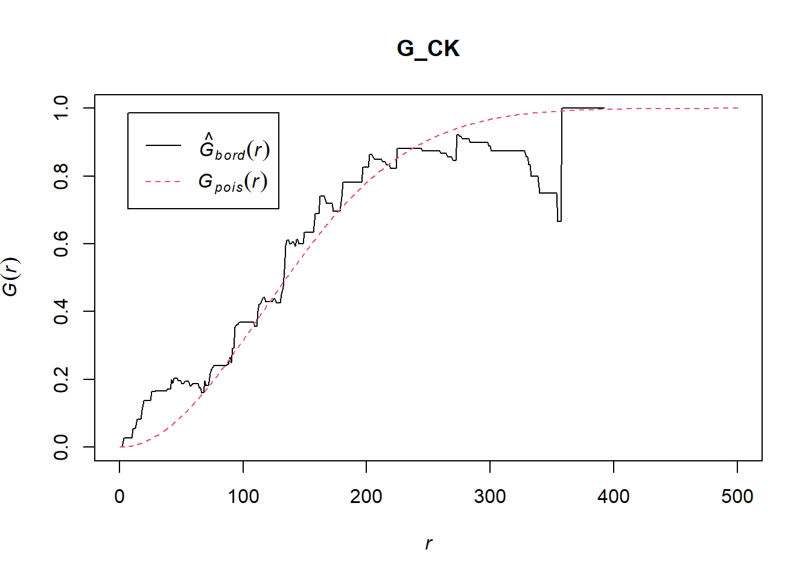
To confirm the observed spatial patterns above, a hypothesis test will be conducted. The hypothesis and test are as follows:
Ho = The distribution of childcare services at Choa Chu Kang are randomly distributed.
H1= The distribution of childcare services at Choa Chu Kang are not randomly distributed.
The null hypothesis will be rejected if p-value is smaller than alpha value of 0.001.
Monte Carlo test with G-fucntion
G_CK.csr <- envelope(childcare_ck_ppp, Gest, nsim = 999)Generating 999 simulations of CSR ...
1, 2, 3, ......10.........20.........30.........40.........50.........60..
.......70.........80.........90.........100.........110.........120.........130
.........140.........150.........160.........170.........180.........190........
.200.........210.........220.........230.........240.........250.........260......
...270.........280.........290.........300.........310.........320.........330....
.....340.........350.........360.........370.........380.........390.........400..
.......410.........420.........430.........440.........450.........460.........470
.........480.........490.........500.........510.........520.........530........
.540.........550.........560.........570.........580.........590.........600......
...610.........620.........630.........640.........650.........660.........670....
.....680.........690.........700.........710.........720.........730.........740..
.......750.........760.........770.........780.........790.........800.........810
.........820.........830.........840.........850.........860.........870........
.880.........890.........900.........910.........920.........930.........940......
...950.........960.........970.........980.........990........
999.
Done.plot(G_CK.csr)
G-function [Tampines]
G_tm = Gest(childcare_tm_ppp, correction = "best")
plot(G_tm)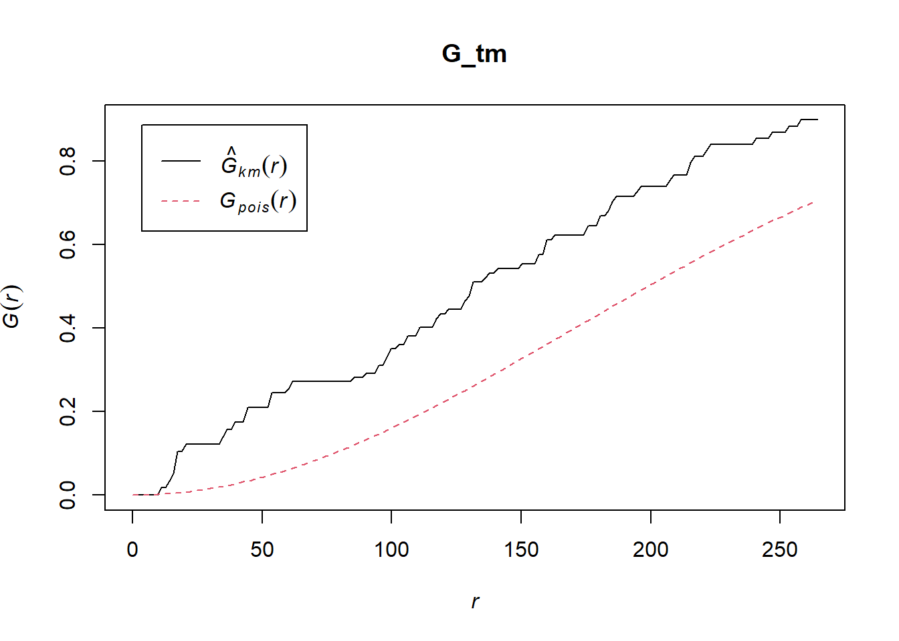
G_tm.csr <- envelope(childcare_tm_ppp, Gest, correction = "all", nsim = 999)Generating 999 simulations of CSR ...
1, 2, 3, ......10.........20.........30.........40.........50.........60..
.......70.........80.........90.........100.........110.........120.........130
.........140.........150.........160.........170.........180.........190........
.200.........210.........220.........230.........240.........250.........260......
...270.........280.........290.........300.........310.........320.........330....
.....340.........350.........360.........370.........380.........390.........400..
.......410.........420.........430.........440.........450.........460.........470
.........480.........490.........500.........510.........520.........530........
.540.........550.........560.........570.........580.........590.........600......
...610.........620.........630.........640.........650.........660.........670....
.....680.........690.........700.........710.........720.........730.........740..
.......750.........760.........770.........780.........790.........800.........810
.........820.........830.........840.........850.........860.........870........
.880.........890.........900.........910.........920.........930.........940......
...950.........960.........970.........980.........990........
999.
Done.plot(G_tm.csr)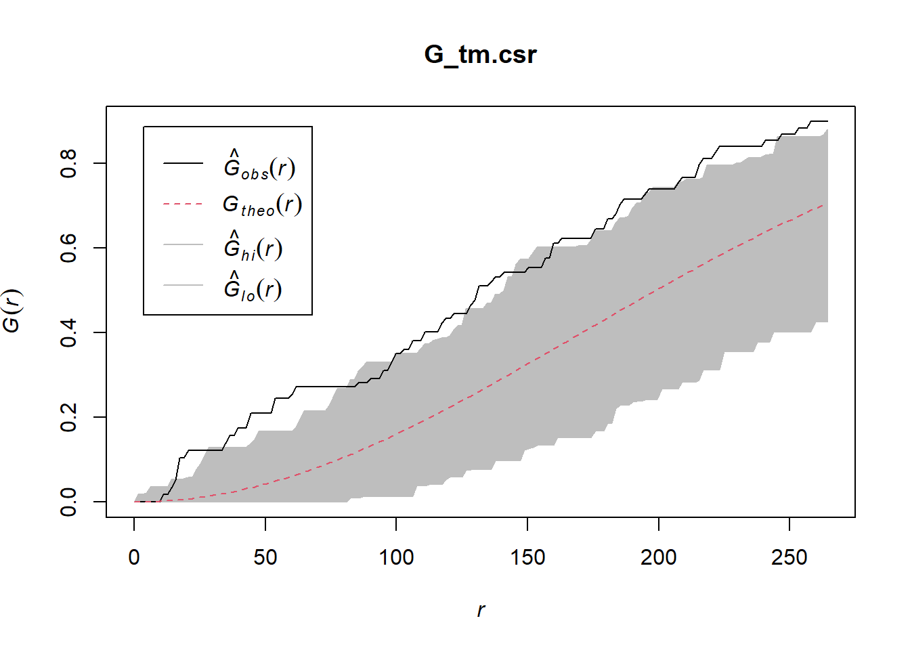
Compute F-function using Fest() [CCK] ::: callout-note The hypothesis and test are as follows:
Ho = The distribution of childcare services at Choa Chu Kang are randomly distributed.
H1= The distribution of childcare services at Choa Chu Kang are not randomly distributed.
The null hypothesis will be rejected if p-value is smaller than alpha value of 0.001. :::
F_CK = Fest(childcare_ck_ppp)
plot(F_CK)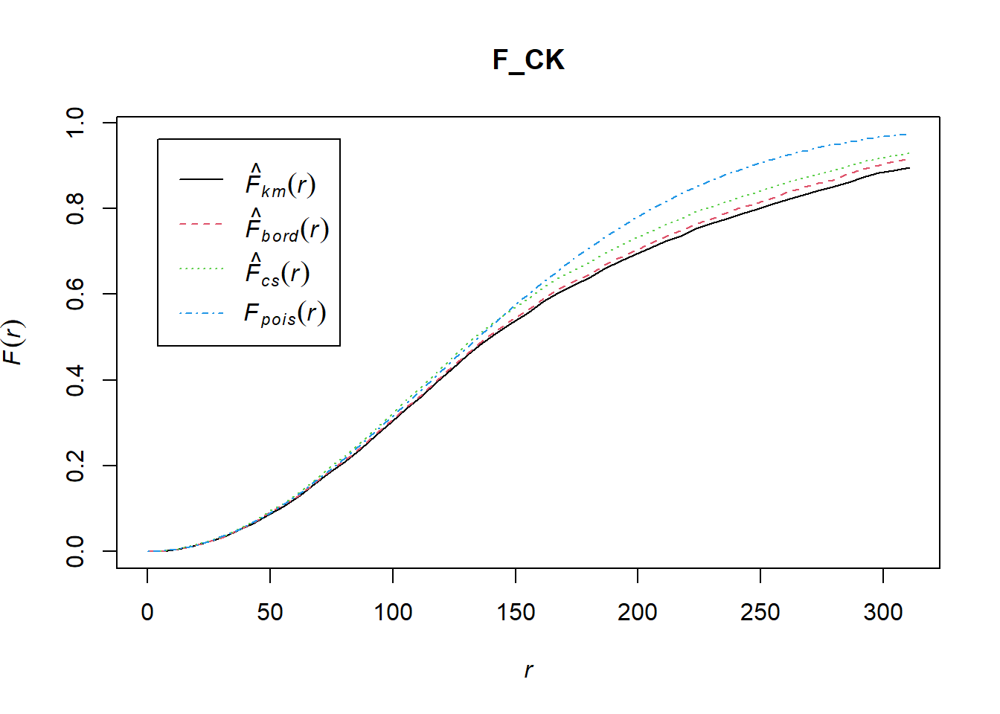
F_CK.csr <- envelope(childcare_ck_ppp, Fest, nsim = 999)Generating 999 simulations of CSR ...
1, 2, 3, ......10.........20.........30.........40.........50.........60..
.......70.........80.........90.........100.........110.........120.........130
.........140.........150.........160.........170.........180.........190........
.200.........210.........220.........230.........240.........250.........260......
...270.........280.........290.........300.........310.........320.........330....
.....340.........350.........360.........370.........380.........390.........400..
.......410.........420.........430.........440.........450.........460.........470
.........480.........490.........500.........510.........520.........530........
.540.........550.........560.........570.........580.........590.........600......
...610.........620.........630.........640.........650.........660.........670....
.....680.........690.........700.........710.........720.........730.........740..
.......750.........760.........770.........780.........790.........800.........810
.........820.........830.........840.........850.........860.........870........
.880.........890.........900.........910.........920.........930.........940......
...950.........960.........970.........980.........990........
999.
Done.plot(F_CK.csr)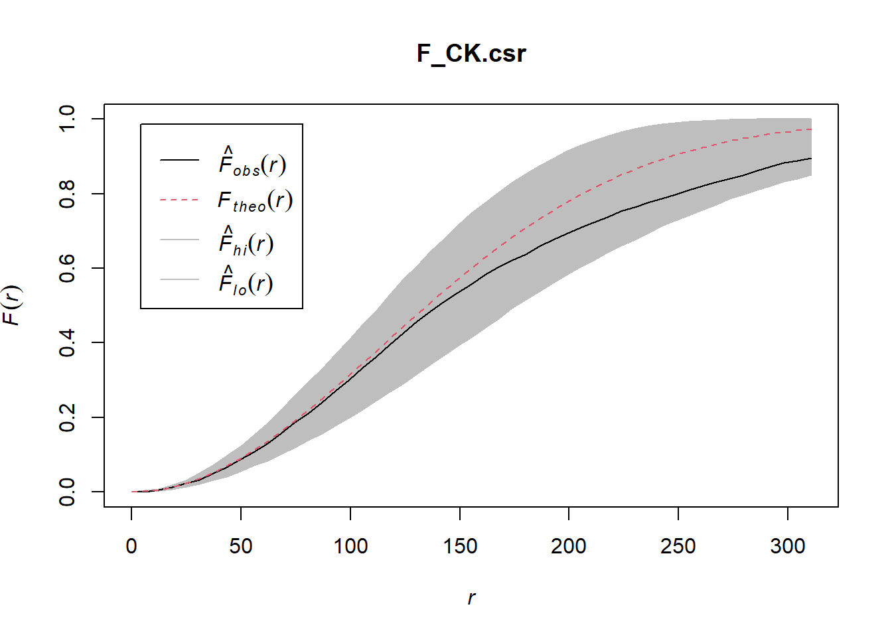
F-function [Tampines]
F_tm = Fest(childcare_tm_ppp, correction = "best")
plot(F_tm)F_tm.csr <- envelope(childcare_tm_ppp, Fest, correction = "all", nsim = 999)Generating 999 simulations of CSR ...
1, 2, 3, ......10.........20.........30.........40.........50.........60..
.......70.........80.........90.........100.........110.........120.........130
.........140.........150.........160.........170.........180.........190........
.200.........210.........220.........230.........240.........250.........260......
...270.........280.........290.........300.........310.........320.........330....
.....340.........350.........360.........370.........380.........390.........400..
.......410.........420.........430.........440.........450.........460.........470
.........480.........490.........500.........510.........520.........530........
.540.........550.........560.........570.........580.........590.........600......
...610.........620.........630.........640.........650.........660.........670....
.....680.........690.........700.........710.........720.........730.........740..
.......750.........760.........770.........780.........790.........800.........810
.........820.........830.........840.........850.........860.........870........
.880.........890.........900.........910.........920.........930.........940......
...950.........960.........970.........980.........990........
999.
Done.plot(F_tm.csr)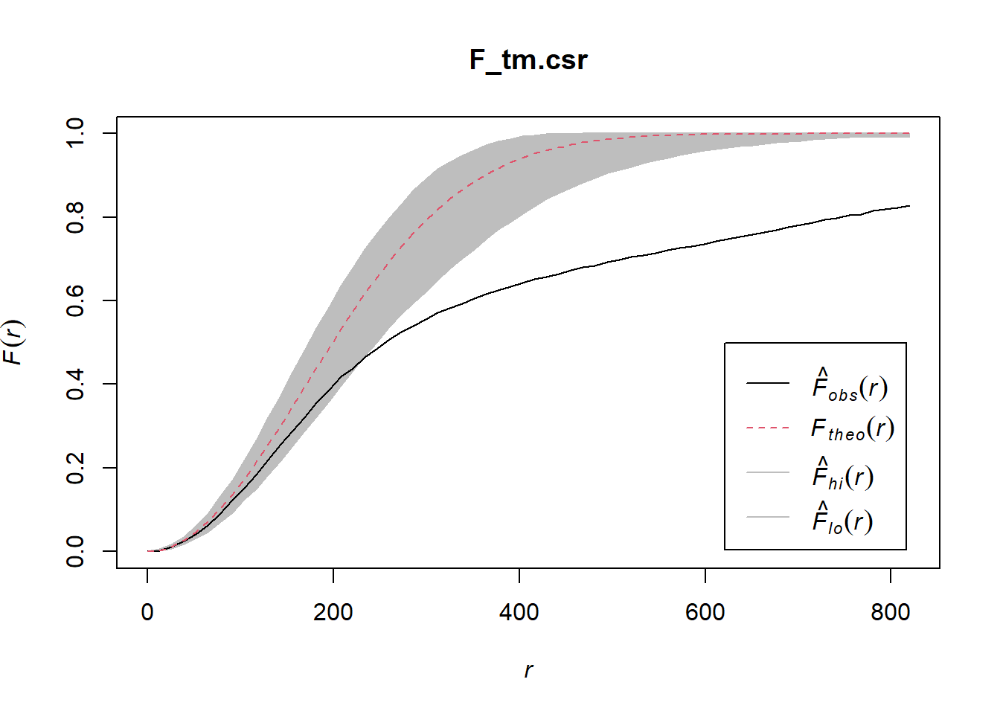
Compute K-function using Kest() [CCK]
K_ck = Kest(childcare_ck_ppp, correction = "Ripley")
plot(K_ck, . -r ~ r, ylab= "K(d)-r", xlab = "d(m)")K_ck.csr <- envelope(childcare_ck_ppp, Kest, nsim = 99, rank = 1, glocal=TRUE)Generating 99 simulations of CSR ...
1, 2, 3, 4, 5, 6, 7, 8, 9, 10, 11, 12, 13, 14, 15, 16, 17, 18, 19, 20,
21, 22, 23, 24, 25, 26, 27, 28, 29, 30, 31, 32, 33, 34, 35, 36, 37, 38, 39, 40,
41, 42, 43, 44, 45, 46, 47, 48, 49, 50, 51, 52, 53, 54, 55, 56, 57, 58, 59, 60,
61, 62, 63, 64, 65, 66, 67, 68, 69, 70, 71, 72, 73, 74, 75, 76, 77, 78, 79, 80,
81, 82, 83, 84, 85, 86, 87, 88, 89, 90, 91, 92, 93, 94, 95, 96, 97, 98,
99.
Done.plot(K_ck.csr, . - r ~ r, xlab="d", ylab="K(d)-r")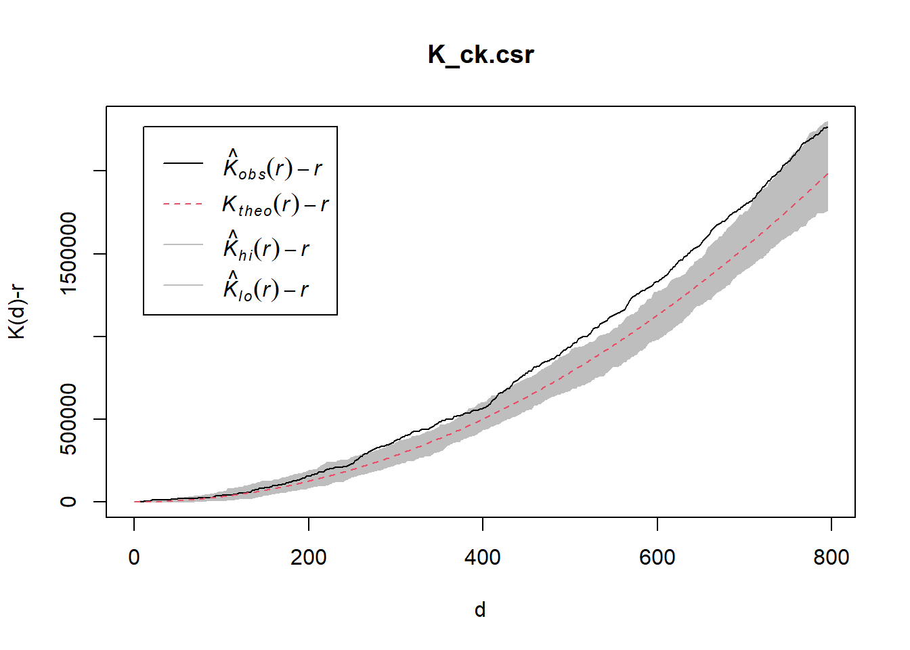
K-function [Tampines]
K_tm = Kest(childcare_tm_ppp, correction = "Ripley")
plot(K_tm, . -r ~ r,
ylab= "K(d)-r", xlab = "d(m)",
xlim=c(0,1000))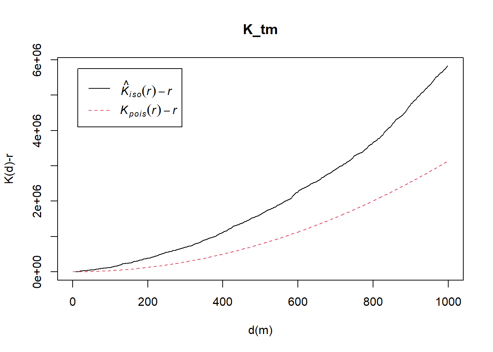
K_tm.csr <- envelope(childcare_ck_ppp, Kest, nsim = 99, rank = 1, glocal=TRUE)Generating 99 simulations of CSR ...
1, 2, 3, 4, 5, 6, 7, 8, 9, 10, 11, 12, 13, 14, 15, 16, 17, 18, 19, 20,
21, 22, 23, 24, 25, 26, 27, 28, 29, 30, 31, 32, 33, 34, 35, 36, 37, 38, 39, 40,
41, 42, 43, 44, 45, 46, 47, 48, 49, 50, 51, 52, 53, 54, 55, 56, 57, 58, 59, 60,
61, 62, 63, 64, 65, 66, 67, 68, 69, 70, 71, 72, 73, 74, 75, 76, 77, 78, 79, 80,
81, 82, 83, 84, 85, 86, 87, 88, 89, 90, 91, 92, 93, 94, 95, 96, 97, 98,
99.
Done.plot(K_tm.csr, . - r ~ r,
xlab="d", ylab="K(d)-r",
xlim=c(0,500))
Compute L-function using Lest() [CCK]
L_ck = Lest(childcare_ck_ppp, correction = "Ripley")
plot(L_ck, . -r ~ r,
ylab= "L(d)-r", xlab = "d(m)")
L_ck.csr <- envelope(childcare_ck_ppp, Lest, nsim = 99, rank = 1, glocal=TRUE)Generating 99 simulations of CSR ...
1, 2, 3, 4, 5, 6, 7, 8, 9, 10, 11, 12, 13, 14, 15, 16, 17, 18, 19, 20,
21, 22, 23, 24, 25, 26, 27, 28, 29, 30, 31, 32, 33, 34, 35, 36, 37, 38, 39, 40,
41, 42, 43, 44, 45, 46, 47, 48, 49, 50, 51, 52, 53, 54, 55, 56, 57, 58, 59, 60,
61, 62, 63, 64, 65, 66, 67, 68, 69, 70, 71, 72, 73, 74, 75, 76, 77, 78, 79, 80,
81, 82, 83, 84, 85, 86, 87, 88, 89, 90, 91, 92, 93, 94, 95, 96, 97, 98,
99.
Done.plot(L_ck.csr, . - r ~ r, xlab="d", ylab="L(d)-r")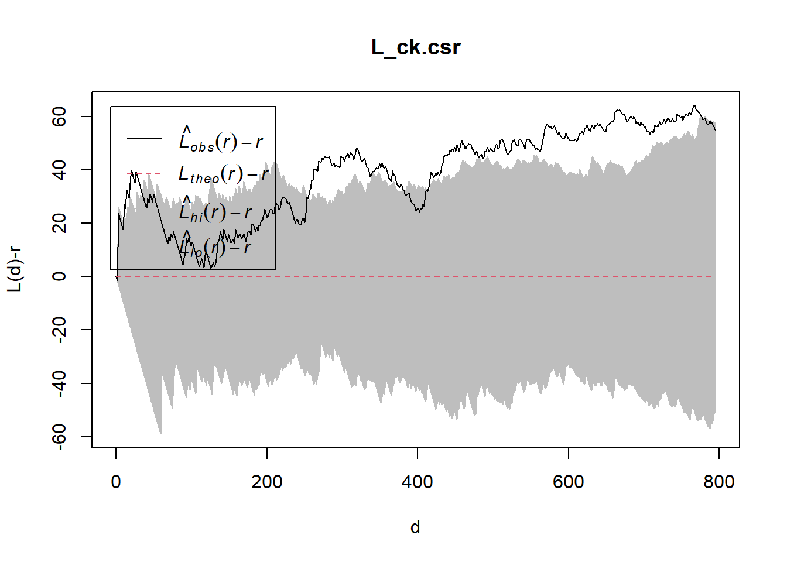
L-function [Tampines]
L_tm = Lest(childcare_tm_ppp, correction = "Ripley")
plot(L_tm, . -r ~ r,
ylab= "L(d)-r", xlab = "d(m)",
xlim=c(0,1000))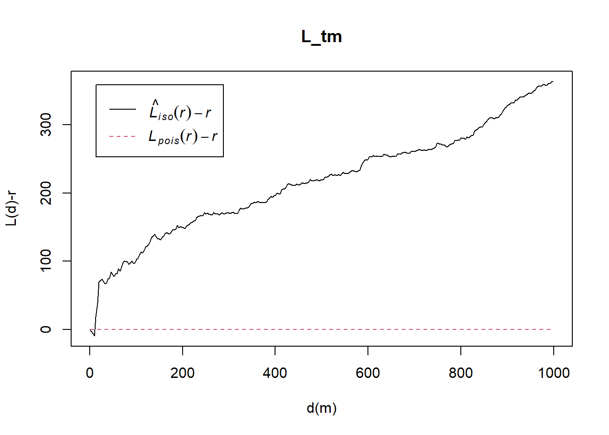
L_tm.csr <- envelope(childcare_tm_ppp, Lest, nsim = 99, rank = 1, glocal=TRUE)Generating 99 simulations of CSR ...
1, 2, 3, 4, 5, 6, 7, 8, 9, 10, 11, 12, 13, 14, 15, 16, 17, 18, 19, 20,
21, 22, 23, 24, 25, 26, 27, 28, 29, 30, 31, 32, 33, 34, 35, 36, 37, 38, 39, 40,
41, 42, 43, 44, 45, 46, 47, 48, 49, 50, 51, 52, 53, 54, 55, 56, 57, 58, 59, 60,
61, 62, 63, 64, 65, 66, 67, 68, 69, 70, 71, 72, 73, 74, 75, 76, 77, 78, 79, 80,
81, 82, 83, 84, 85, 86, 87, 88, 89, 90, 91, 92, 93, 94, 95, 96, 97, 98,
99.
Done.plot(L_tm.csr, . - r ~ r, xlab="d", ylab="L(d)-r",
xlim=c(0,500))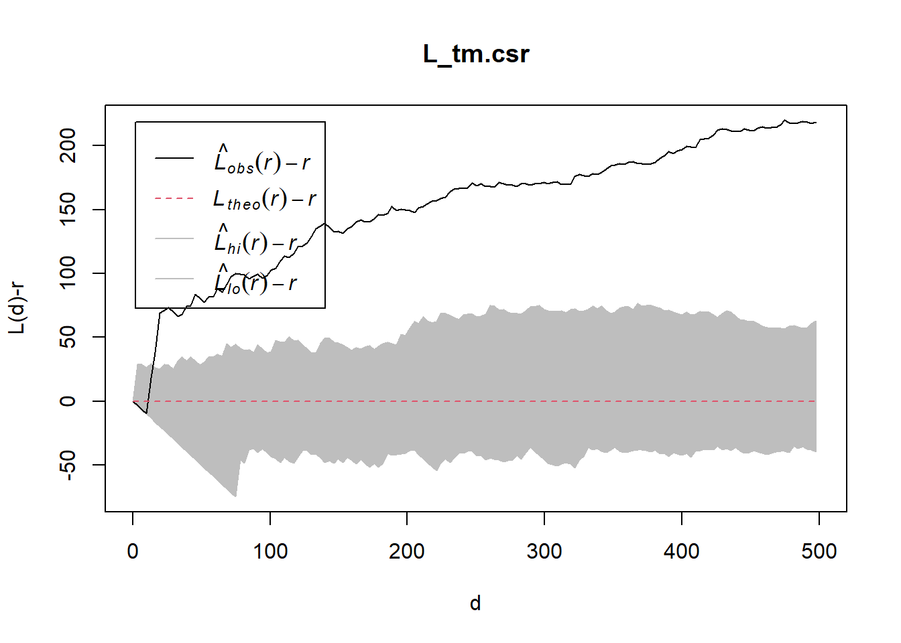